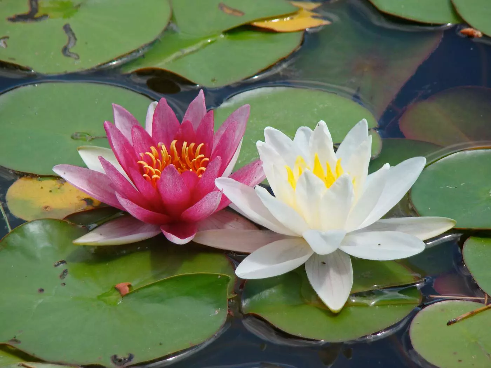

Em propriedades de classe alta ao redor do mundo, os jardins aquáticos sempre foram um destaque de luxo, e o destaque desses jardins é sem dúvida o lírio de água. Os lírios de água são elegantes, exóticos e intemporais, e acrescentam um encanto artístico até mesmo ao mais humilde lago do quintal.
Este post lhe apresentará ao lírio de água como escolher um, como plantar um e como cuidar dele. Você pode se surpreender com a facilidade com que eles são fáceis de ter por perto, então vamos começar.
Há mais de 60 espécies de lírios de água para escolher, todos deliciosos à sua maneira. Eles crescem em uma gama de tonalidades, desde brancos sutis e tons pastéis até pops de cores profundas e vibrantes. Suas flores podem ser bastante grandes e muitas vezes são lindamente perfumadas.
Há dois tipos de lírios de água: resistentes e tropicais. Os lírios duros são perenes, e embora suas folhas e flores morram, as raízes sobreviverão, desde que não congelem. Os lírios de água tropicais, por outro lado, são tratados como anuais.
Além de escolher a cor e o tipo que você prefere, com lírios de água, você também vai querer considerar o tempo de floração. Algumas espécies são florescentes noturnas, abrindo ao anoitecer e fechando novamente no meio da manhã. As florações diurnas abrem cedo, mas normalmente fecham por volta do meio-dia.
- Os lírios preferem águas paradas, portanto evite plantar seu lírio perto de fontes ou correntes.
- Certifique-se também de que seus lírios tenham um ambiente pacífico onde seja improvável que sejam perturbados.
- Os cães que brincam em lagos, por exemplo, podem causar estragos nos lírios - não se esqueça de manter afastados os amigos de quatro patas.